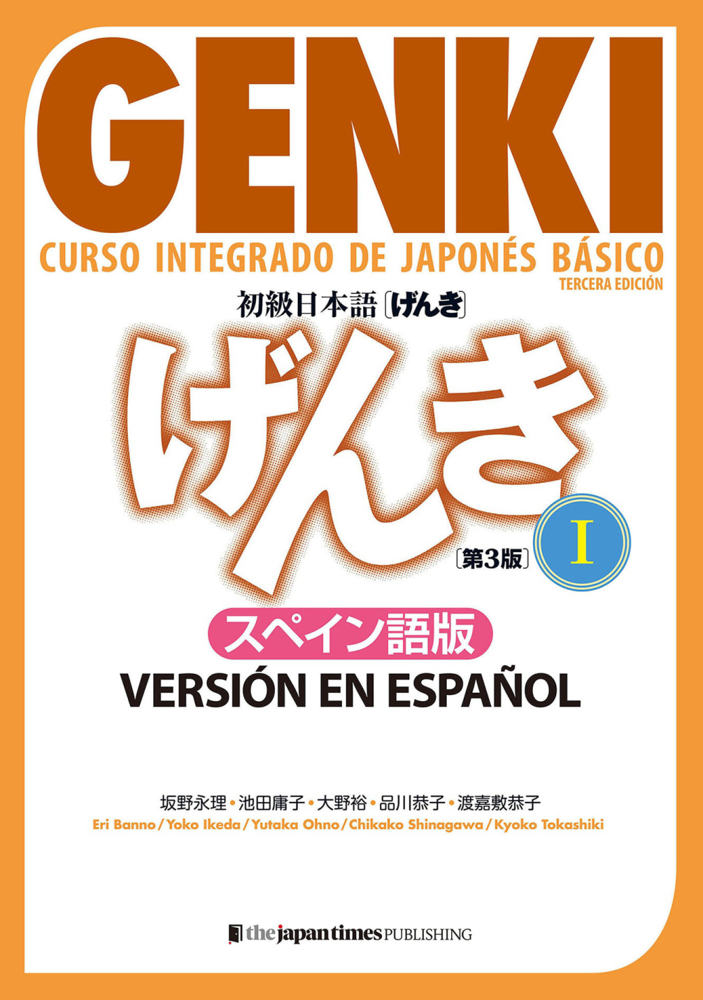
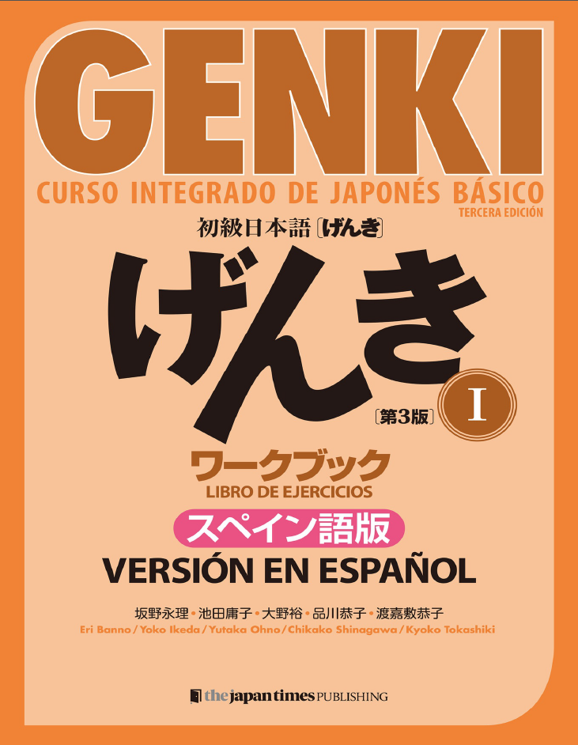
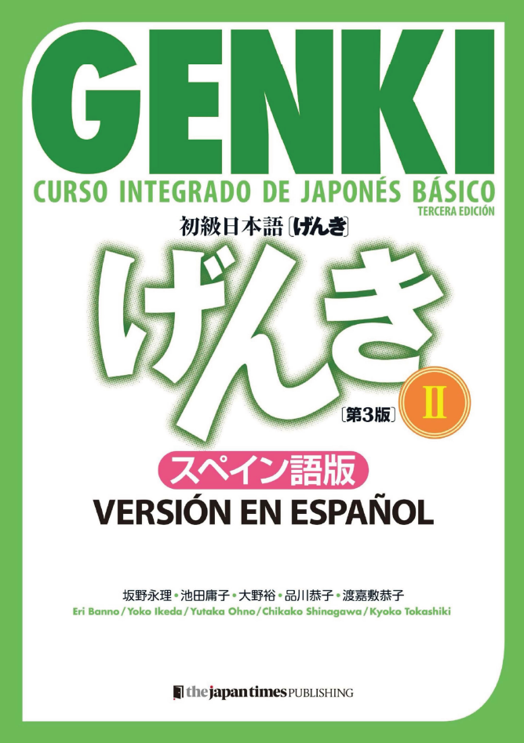
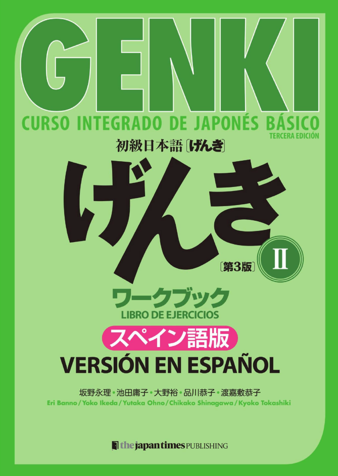
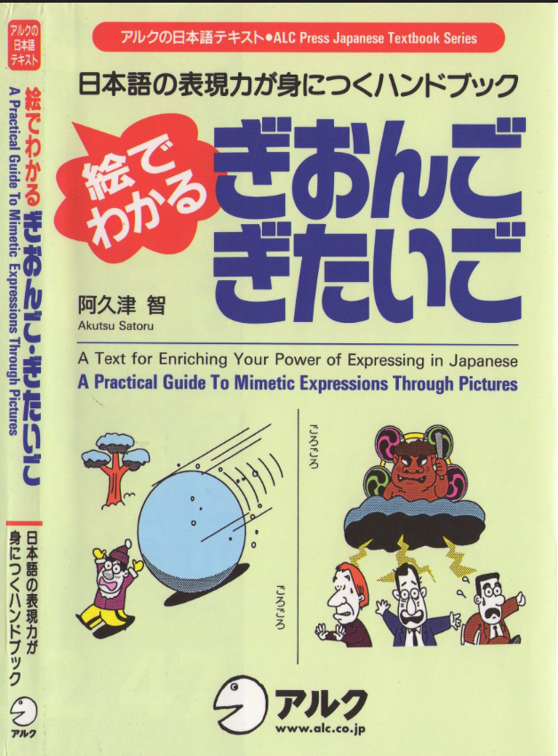

![Nihongo No Torii [Hiragana]](image/nnthiragana.png)
Nihongo No Torii [Hiragana]
Kanji Para Recordar

GENKI 1 (Version Español)

GENKI 1 [Libro de Ejercicios]

GENKI 2 (Version Español)

GENKI 2 [Libro de Ejercicios]
Los silabarios japoneses Kana

GIONGO GITAIGO [Onomatopeyas]
Kanken Nivel 10 (漢検10級漢字学習ステップ 2012 )